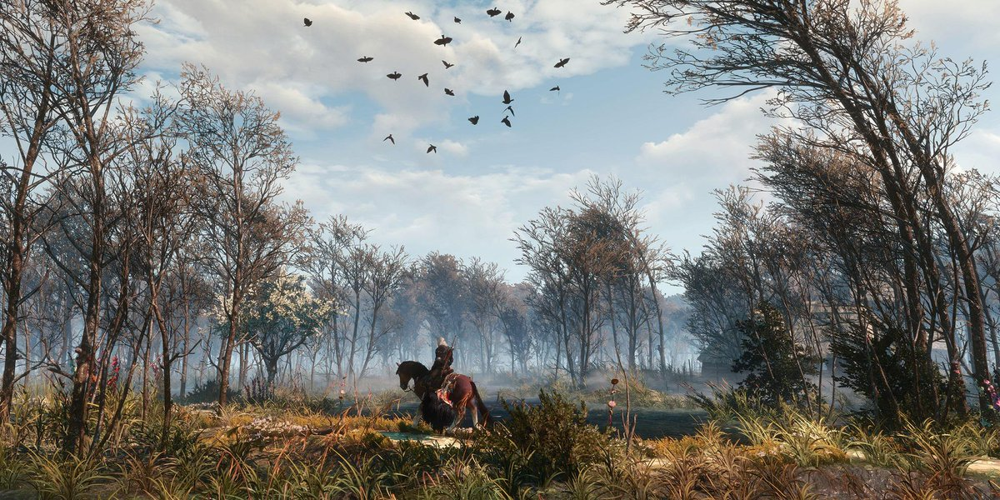
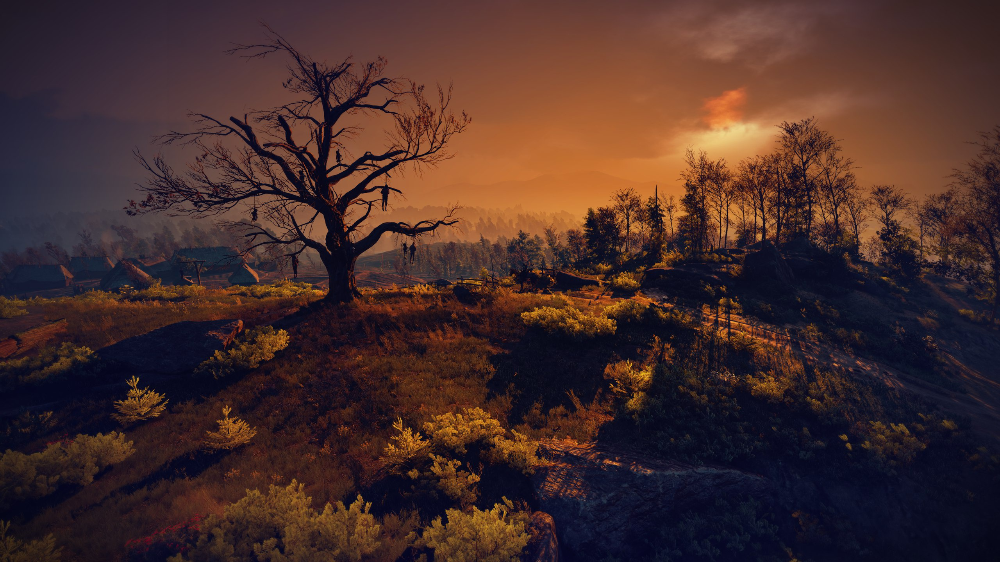

Velen, známý také jako Země nikoho (No Man's Land), je pravděpodobně nejdepresivnější, nejtemnější, ale zároveň atmosféricky nejúžasnější lokací ve hře Zaklínač 3: Divoký hon. Je to první obrovská otevřená oblast, do které Geralt vstoupí po odjezdu z Wyzimy, a pro mnoho hráčů představuje ten pravý, nefalšovaný zážitek ze zaklínačského světa. Velen je rozsáhlá, bažinatá a chudá provincie na severu Temerie. V době hry tudy prošla fronta - země je vypleněná nilfgaardskou armádou, vesnice jsou vypálené a mocenské vakuum vyústilo v bezvládí. Oficiálně sice oblasti vládne samozvaný místodržící (Krvavý baron), ale reálnou moc zde mají bída, hlad, nemoci a monstra. Geralt sem přichází hledat Ciri, o které má zprávy, že se zde pohybovala. Pátrání ho zavede ke dvěma naprosto ikonickým a mistrovsky napsaným příběhovým liniím, které se navzájem prolínají. Velen je pro hráče šokem po relativně bezpečném Bělosadu. Svět se zde plně otevírá a s ním i drsná realita hry.
